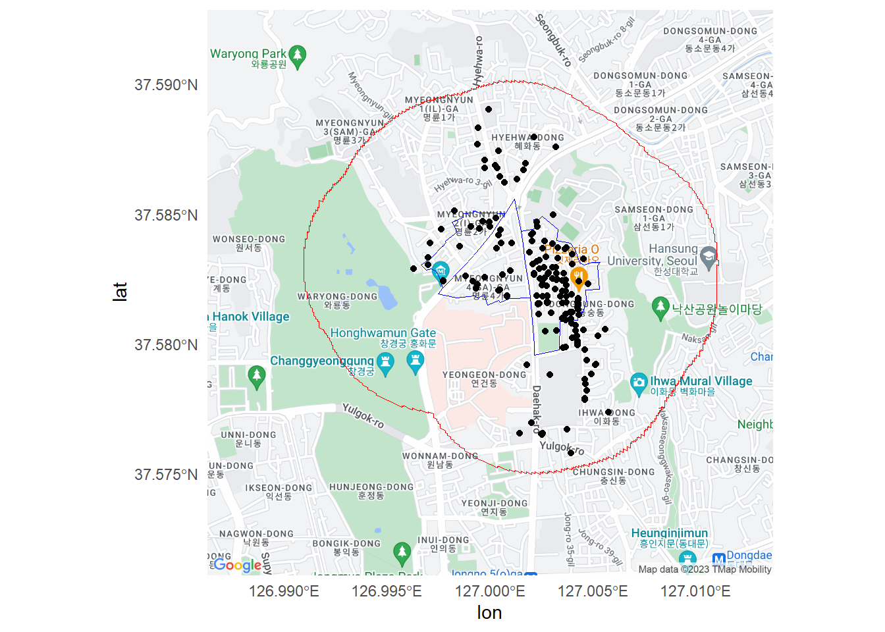
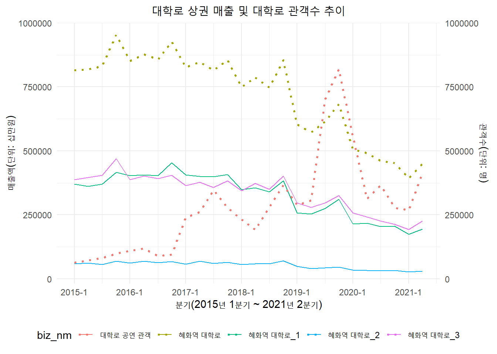

# install.packages("forecast")
# install.packages("zoo")
# install.packages('changepoint')
# install.packages('httr')
# install.packages('xml2')
# install.packages("remotes")
# install.packages('rgdal')
# install.packages("sf")
# install.packages("ggmap")
library(httr)
library(xml2)
library(tidyverse)
library(zoo)
library(readxl)
library(remotes)
library(rgdal)
library(sf)
library(ggmap)대학로 공연 및 상권 시각화
0. 필요 라이브러리
1. 데이터 및 기본 전처리
1.1. Raw data
1.1.1. 공연데이터
- 공연예술통합전산망(KOPIS) API, 서울 열린데이터광장 상권 shp(polygon) 이용
- KOPIS API를 이용한 종로구 공연장리스트 생성(hall_list_sf)
# 공연장 리스트 받아오기(종로구)
## api to csv
url <- 'http://www.kopis.or.kr/openApi/restful/prfplc?service={APIkey}&cpage=1&rows=500&signgucodesub=1111'
response <- GET(url)
content <- content(response, "text")
parsed_content <- read_xml(content)
hall_list <- xml_find_all(parsed_content, ".//db") %>%
map_df(~ data.frame(
fcltynm = xml_text(xml_find_first(.x, ".//fcltynm")),
mt10id = xml_text(xml_find_first(.x, ".//mt10id")),
mt13cnt = xml_text(xml_find_first(.x, ".//mt13cnt")),
fcltychartr = xml_text(xml_find_first(.x, ".//fcltychartr")),
sidonm = xml_text(xml_find_first(.x, ".//sidonm")),
gugunnm = xml_text(xml_find_first(.x, ".//gugunnm")),
opende = xml_text(xml_find_first(.x, ".//opende"))
))
write.csv(hall_list, "./data/hall_list.csv", row.names = FALSE)## csv파일 불러오기
hall_list <- read.csv("./data/hall_list.csv")# 공연장 리스트에 좌표받아오기
result_list <- list()
for (i in hall_list$mt10id) {
url <- paste('http://www.kopis.or.kr/openApi/restful/prfplc/', i,
'?service={APIkey}', sep = '')
response <- GET(url)
content <- content(response, "text")
parsed_content <- read_xml(content)
tmp_hall <- xml_find_all(parsed_content, ".//db") %>%
map_df(~ data.frame(
mt10id = xml_text(xml_find_first(.x, ".//mt10id")),
adres = xml_text(xml_find_first(.x, ".//adres")),
la = xml_text(xml_find_first(.x, ".//la")),
lo = xml_text(xml_find_first(.x, ".//lo"))
))
result_list <- append(result_list, list(tmp_hall))
}
hall_list_spc <- bind_rows(result_list)
write.csv(hall_list_spc, "./data/hall_list_spc.csv", row.names = FALSE)## csv파일 불러오기
hall_list_spc <- read.csv("./data/hall_list_spc.csv")# join
hall_list_join <- left_join(hall_list, hall_list_spc, by = "mt10id")
# 지도데이터 전환
hall_list_sf <- st_as_sf(hall_list_join, coords = c("lo", "la"), crs = 4326)- 상권영역 인접 영역에서의 공연장 리스트 생성(joined_data)
# 서울시 열린데이터광장 상권지도 중 대학로 상권
biz_area <- st_read("./data/map/TBGIS_TRDAR_RELM.shp")Reading layer `TBGIS_TRDAR_RELM' from data source
`C:\Users\usaqn\Documents\TY-Portfolio\02_PANIMPACT\대학로 공연 및 상권 시각화\data\map\TBGIS_TRDAR_RELM.shp'
using driver `ESRI Shapefile'
Simple feature collection with 1496 features and 9 fields
Geometry type: MULTIPOLYGON
Dimension: XY
Bounding box: xmin: 182790.5 ymin: 437685.3 xmax: 215343.5 ymax: 465691.5
Projected CRS: Korea 2000 / Central Beltdaehakro_area <- biz_area[biz_area$TRDAR_CD_N %in% c("혜화역 대학로_1", "혜화역 대학로_2", "혜화역 대학로_3"), ]
daehakro_area <- st_transform(daehakro_area, crs = 4326)
buffered_polygons <- st_buffer(daehakro_area, dist = 500) ## 상권영역 + 인접영역(500m)
merged_polygon <- st_union(buffered_polygons)
merged_polygon_df <- st_sf(geom = merged_polygon)
# 상권영역(+인접500m)내 공연장 리스트
joined_data <- st_join(hall_list_sf, merged_polygon_df, left = FALSE, join = st_within)# 시각화를 위한 구글맵 다운로드
center <- c(lon = 127.000, lat = 37.582)
api_key <- "APIkey"
register_google(key = api_key)
map <- get_googlemap(center, zoom = 15, maptype = 'roadmap', crs = 4326)
saveRDS(map, "./data/map/google_map_data.rds")# 시각화
map <- readRDS("./data/map/google_map_data.rds")
ggmap(map) +
geom_sf(data = daehakro_area, fill = "transparent", color = "blue", inherit.aes = F) +
geom_sf(data = merged_polygon_df, fill = "transparent", color = "red", inherit.aes = F) +
geom_sf(data = joined_data, inherit.aes = F) +
theme_minimal()Coordinate system already present. Adding new coordinate system, which will
replace the existing one.
- KOPIS API를 이용한 상권영역 인접 영역에 위치한 공연장의 기간내(2015-1Q ~ 2021-2Q) 관객수
# 관객수 데이터를 위한 api to csv
q_start <- list(
"20150101", "20150401", "20150701", "20151001", "20160101", "20160401", "20160701",
"20161001", "20170101", "20170401", "20170701", "20171001","20180101", "20180401",
"20180701", "20181001", "20190101", "20190401", "20190701", "20191001", "20200101",
"20200401", "20200701", "20201001", "20210101", "20210401")
q_end <- list(
"20150331", "20150630", "20150930", "20151231", "20160331", "20160630", "20160930",
"20161231", "20170331", "20170630", "20170930", "20171231", "20180331", "20180630",
"20180930", "20181231", "20190331", "20190630", "20190930", "20191231", "20200331",
"20200630", "20200930", "20201231", "20210331", "20210630")
result_list <- list()
for (i in seq_along(q_start)) {
year <- substr(q_start[[i]], 1, 4)
quarter <- ifelse(i %% 4 == 0, 4, i %% 4)
year_quarter <- paste(year, quarter, sep = "-")
url <- paste("http://www.kopis.or.kr/openApi/restful/prfstsPrfByFct?service={APIkey}&cpage=1&rows=1000&sharea=11",
"&stdate=", q_start[[i]], "&eddate=", q_end[[i]], sep = "")
response <- GET(url)
content <- content(response, "text")
parsed_content <- read_xml(content)
tmp_hall <- xml_find_all(parsed_content, ".//prfst") %>%
map_df(~ data.frame(
prfnmfct = xml_text(xml_find_first(.x, ".//prfnmfct")),
prfnmplc = xml_text(xml_find_first(.x, ".//prfnmplc")),
seatcnt = xml_text(xml_find_first(.x, ".//seatcnt")),
prfprocnt = xml_text(xml_find_first(.x, ".//prfprocnt")),
prfdtcnt = xml_text(xml_find_first(.x, ".//prfdtcnt")),
totnmrs = xml_text(xml_find_first(.x, ".//totnmrs")),
year_q = year_quarter
))
result_list <- append(result_list, list(tmp_hall))
}
audience_num <- bind_rows(result_list)
write.csv(audience_num, "./data/audience_num.csv", row.names = FALSE)# csv파일 불러오기
audience_num <- read.csv("./data/audience_num.csv")
# 정리
audience_num <- audience_num %>%
mutate(seatcnt = as.integer(seatcnt),
prfprocnt = as.integer(prfprocnt),
prfdtcnt = as.integer(prfdtcnt),
totnmrs = as.integer(totnmrs)) %>%
group_by(year_q, prfnmfct) %>%
summarise(tot_seat = sum(seatcnt),
tot_prfpro = sum(prfprocnt),
tot_prfdt = sum(prfdtcnt),
tot_nmrs = sum(totnmrs),
.groups = "drop") %>%
select(year_q, prfnmfct, tot_seat, tot_prfpro, tot_prfdt, tot_nmrs)
# 대학로상권 인접 공연장만
audience_joined <- inner_join(audience_num, joined_data, by = c("prfnmfct" = "fcltynm"))
# 분기별 sum
audience_num_fin <- audience_joined %>%
group_by(year_q) %>%
summarise(tot_nmrs = sum(tot_nmrs), tot_prfdt = sum(tot_prfdt)) %>%
select(year_q, tot_prfdt, tot_nmrs)1.1.2. 상권매출데이터
raw_1 <- read.csv("./data/store.csv")
store <- raw_1 %>%
select(기준_년_코드, 기준_분기_코드, 상권_코드, 상권_코드_명, 분기당_매출_금액,
분기당_매출_건수) %>%
mutate(기준_년_분기 = paste(기준_년_코드, 기준_분기_코드, sep = "-")) %>%
select(기준_년_분기, 상권_코드_명, 분기당_매출_금액, 분기당_매출_건수) %>%
group_by(기준_년_분기, 상권_코드_명) %>%
summarise(총_분기당_매출_금액 = sum(분기당_매출_금액),
총_분기당_매출_건수 = sum(분기당_매출_건수))
store_newbiz <- store %>%
select(기준_년_분기, 상권_코드_명, 총_분기당_매출_금액, 총_분기당_매출_건수) %>%
group_by(기준_년_분기) %>%
summarise(총_분기당_매출_금액 = sum(총_분기당_매출_금액),
총_분기당_매출_건수 = sum(총_분기당_매출_건수)) %>%
mutate(상권_코드_명 = "혜화역 대학로") %>%
select(기준_년_분기, 상권_코드_명, 총_분기당_매출_금액, 총_분기당_매출_건수)
store_fin <- bind_rows(store, store_newbiz)1.2. 최종 테이블
| 번호 | 변수명 | 설명 |
|---|---|---|
| 1 | year_q | 연도_분기 |
| 2 | aud_performcnt | 혜화역상권 인근 공연 총 횟수 |
| 3 | aud_ticketcnt | 혜화역상권 인근 공연 총 관람객수 |
| 4 | biz_nm | 혜화역상권명 (혜화역 대학로는 3개 상권을 합친 상권) |
| 5 | biz_revenue | 혜화역상권 총 추정매출액(단위: 원) |
| 6 | biz_salecnt | 혜화역상권 총 매출건수 |
# 분석 테이블 정의(base_table)
base_table <- left_join(audience_num_fin, store_fin, by = c("year_q" = "기준_년_분기")) %>%
mutate(biz_nm = 상권_코드_명, aud_performcnt = tot_prfdt, aud_ticketcnt = tot_nmrs, biz_revenue = 총_분기당_매출_금액, biz_salecnt = 총_분기당_매출_건수) %>%
mutate(year_q = as.yearqtr(year_q, format = "%Y-%q")) %>%
select(year_q, aud_performcnt, aud_ticketcnt, biz_nm, biz_revenue, biz_salecnt)
# 기초 시각화
plot_base_table <- ggplot(data = base_table) +
geom_line(data = subset(base_table, biz_nm != "혜화역 대학로"), aes(x = year_q, y = biz_revenue / 100000, color = biz_nm)) +
geom_line(data = subset(base_table, biz_nm == "혜화역 대학로"), aes(x = year_q, y = biz_revenue / 100000, color = "혜화역 대학로"), linetype = "dotted", linewidth = 1.0) +
geom_line(mapping = aes(x = year_q, y = aud_ticketcnt, color = "대학로 공연 관객"), linetype = "dotted", linewidth = 1.0) +
labs(title = "대학로 상권 매출 및 대학로 관객수 추이",
y = "매출액(십만원)",
x = "분기(2015년 1분기 ~ 2021년 2분기)") +
theme_minimal() +
theme(legend.position = "bottom") +
theme(plot.title = element_text(hjust = 0.5)) +
scale_y_continuous(
name = "매출액(단위: 십만원)",
sec.axis = sec_axis(~ ., name = "관객수(단위: 명)")
)
print(plot_base_table)